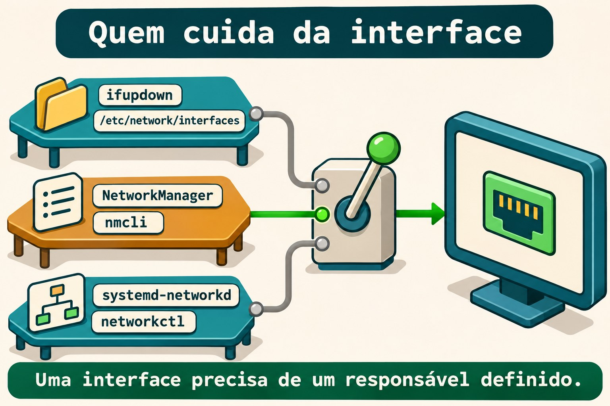
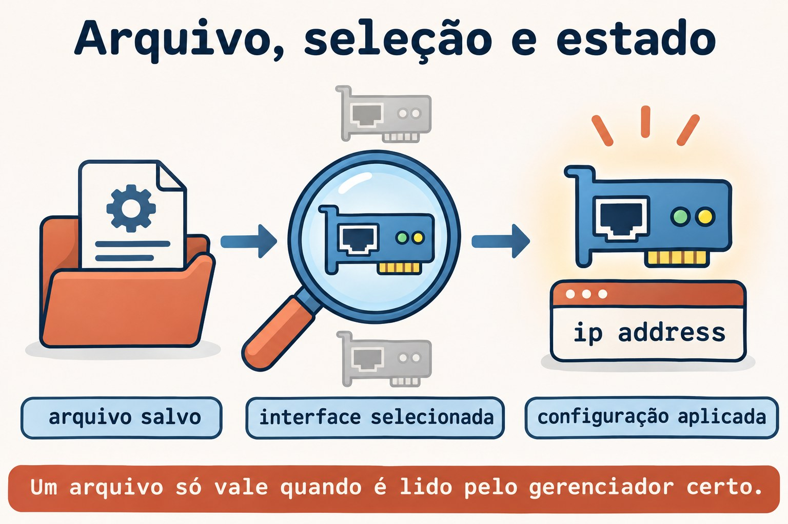

Aula 11.3 · Rede no Debian
No Windows Server, você procura a configuração que realmente administra a placa antes de alterar um endereço. No Debian, essa pergunta vem antes do nome do comando: quem cuida desta interface? Na Aula 11.2 você trabalhou com perfis do NetworkManager; agora vai ler e aplicar uma configuração de ifupdown, comparar os dois modelos e reconhecer arquivos do systemd-networkd.
Núcleo desta aula: descubra o responsável pela interface, encontre o arquivo que ele lê e confira o estado aplicado no kernel. Um arquivo correto no lugar errado não configura a rede. O resto é aprofundamento.
| Ficha | |
|---|---|
| Módulo | M11 · Rede, aula 3 de 5 |
| Quando | Semana 16 |
| Ao final | Você identifica o gerenciador, interpreta interfaces, aplica uma interface interna e compara com NetworkManager e networkd |
| Pré-requisitos | Aulas 11.1 e 11.2; SSH, sudo, noVNC; Debian com ifupdown e Rocky com NetworkManager |
| Tempo | Cerca de 90 minutos, mais 30 minutos para repetir sem consultar |
| Snapshots | m11a3-inicio e m11a3-fim nas VMs 201 e 202 |
1 · Aquecimento
Responda sem consultar. O gabarito fica no fim.
- Qual é a diferença entre perfil salvo e conexão ativa no NetworkManager?
- Um endereço adicionado com
ip address addcomprova persistência depois do reboot? - Antes de mudar a placa usada pelo SSH, qual acesso ou plano de retorno precisa estar disponível?
2 · Por que importa
Você edita um perfil de NetworkManager, mas o Debian continua usando outro endereço. O arquivo parece certo, o comando existe e a rede funciona. O problema é que aquela interface está sob ifupdown; você alterou uma configuração que não participa do caminho de ativação.
| Pergunta | Evidência útil |
|---|---|
| Quem está instalado? | Pacotes e comandos disponíveis |
| Quem está em execução? | Unidades e processos do gerenciador |
| Quem administra esta interface? | Configuração, seleção e estado do dispositivo |
| Qual endereço entrou? | ip address |
| O que volta no boot? | Configuração persistente e teste de reboot |
O nome da distribuição não responde sozinho às cinco perguntas. Uma instalação mínima e uma instalação com ambiente gráfico podem usar modelos diferentes.
3 · Modelo mental
Pense em três equipes que podem receber a ficha de uma mesma instalação. Cada equipe lê uma linguagem própria. Você precisa escolher quem executa a ficha e impedir que outra equipe tente configurar a mesma interface ao mesmo tempo.
ifupdown → interfaces → ifup → interface → ip address
NetworkManager → perfil → nmcli → interface → ip address
systemd-networkd → .network → networkctl → interface → ip addressO kernel mantém o estado atual da rede. Os gerenciadores organizam como esse estado é criado e mantido. Ter dois serviços instalados não é automaticamente um conflito; o conflito aparece quando as responsabilidades pela mesma interface se sobrepõem.


Ponte Windows
| Windows Server | Debian e Rocky | O que você compara |
|---|---|---|
| Descobrir a origem da configuração | Identificar o gerenciador da interface | Quem aplica a configuração |
| Configuração estática da placa | iface ... inet static ou perfil manual | Endereço e prefixo persistentes |
| Configuração obtida automaticamente | Método dhcp ou auto, conforme a ferramenta | Solicitar dados ao mecanismo correto |
| Consultar o endereço atual | ip -br address | Estado efetivo, independente do gerenciador |
| Conferir depois do reinício | Reboot e nova consulta | Persistência demonstrada |
4 · O essencial
ifupdown: arquivo e ação
ifupdown lê /etc/network/interfaces e os arquivos incluídos por ele. ifup configura uma interface; ifdown desfaz a configuração; ifquery interpreta as definições e consulta o estado registrado pela ferramenta.
sudo ifquery --list
sudo ifquery m11dummy1O primeiro comando lista interfaces definidas. O segundo só encontra m11dummy1 depois que você instalar a configuração do lab. Uma definição lida por ifquery não comprova endereço aplicado nem comunicação.
As linhas que você precisa reconhecer
| Trecho | Significado |
|---|---|
auto m11dummy1 | Inclui a interface na ativação com ifup -a, usada no boot |
allow-hotplug enp6s18 | Permite ativação associada à detecção do dispositivo |
iface m11dummy1 inet static | Define IPv4 estático |
iface m11dummy1 inet6 static | Define IPv6 estático |
address 198.51.100.10/24 | Endereço IPv4 e prefixo |
gateway ... | Define o próximo salto padrão dessa família |
source ... | Inclui outros arquivos de configuração |
allow-hotplug acompanha a detecção do dispositivo, não a conexão de um cabo Ethernet. auto não significa DHCP: ele escolhe quando ativar; o método na linha iface escolhe como configurar.
O diretório só participa se for incluído
Um arquivo em /etc/network/interfaces.d/ precisa ser alcançado por uma diretiva do arquivo principal. Com source /etc/network/interfaces.d/*, o padrão seleciona arquivos daquele diretório. Com source-directory, há regras próprias para os nomes aceitos, incluindo apenas letras, números, hífen e sublinhado.
No lab, o arquivo se chama m11a3, sem extensão, e você confirma sua leitura com ifquery. Um rascunho em ~/m11a3 não participa da configuração padrão.
Ao pesquisar diretórios protegidos, deixe a seleção de arquivos para o comando executado sob sudo, por exemplo sudo grep -r --include='*.network' ... DIRETORIO. Um glob aberto pelo shell do student é expandido antes de sudo.
networking.service não é um daemon de endereçamento
Com ifupdown, networking.service executa tarefas de configuração e pode ficar como active (exited). Isso indica que a unidade terminou sua ação e mantém o estado ativo. Não é motivo, sozinho, para reiniciar a rede.
Leia a configuração, o registro de ifupdown e o estado no kernel. Evite ifdown -a e reiniciar networking para corrigir uma única interface: essas ações têm alcance maior que o defeito investigado.
NetworkManager: outra origem, mesma conferência
Na Rocky, você compara o perfil salvo com a conexão ativa, como na 11.2. No Debian, o plugin ifupdown do NetworkManager normalmente deixa de gerenciar interfaces declaradas em interfaces quando managed=false está configurado.
Essa regra depende da configuração carregada; não a presuma só pelo pacote instalado. Nesta aula, o Debian do lab mantém NetworkManager e networkd inativos, e a Rocky mantém NetworkManager como responsável.
systemd-networkd: selecionar antes de aplicar
Um arquivo .network tem uma seção [Match] para selecionar interfaces e uma seção [Network] para sua configuração. Um arquivo .netdev descreve a criação de um dispositivo virtual; .network não é o arquivo de criação de uma interface dummy.
Os arquivos são considerados em ordem alfanumérica. O primeiro .network que corresponde à interface é usado; os posteriores que também correspondem não são somados. Arquivos com o mesmo nome obedecem à prioridade dos diretórios, com /etc acima de /run e dos diretórios do sistema.
networkctl reload relê arquivos e pode reconfigurar interfaces afetadas. networkctl reconfigure INTERFACE pede a reconfiguração de uma interface, sem reler sozinho arquivos editados. Nenhum dos dois entra como tentativa nesta aula: você apenas escreve um exemplo fora dos diretórios do serviço.


Rocky × Debian
| Item | Rocky 9, VM 201 | Debian 13, VM 202 |
|---|---|---|
| Acesso e IP real | ssh rocky-lab, 10.1.0.51 | ssh debian-lab, 10.1.0.52 |
| Responsável esperado no lab | NetworkManager ativo | ifupdown, com networking.service |
| Configuração aplicada | Perfil m11a3-interno | /etc/network/interfaces.d/m11a3 |
| Aplicar somente o recurso do lab | nmcli connection up m11a3-interno | ifup m11dummy1 |
| Consultar definição | nmcli connection show m11a3-interno | ifquery m11dummy1 |
| Conferir endereço | ip -br address show dev m11dummy1 | Mesmo comando |
| Pacote específico | NetworkManager | ifupdown |
5 · Lab guiado
Você criará a interface interna m11dummy1 nas duas VMs, com IPv4 198.51.100.10/24 e IPv6 2001:db8:13::10/64. São endereços de documentação, usados somente dentro de cada VM. Não haverá bridge, servidor DHCP, gateway novo nem mudança no DNS.
Antes de qualquer alteração: abra o noVNC das duas VMs e confirme acesso como student com sudo. A placa de SSH permanece intacta. Não execute estes passos no nó Proxmox: os comandos de rede do lab são para as VMs 201 e 202.
Passo 0 · Guardar o ponto de volta. No nó Proxmox de cada VM:
Palpite: o snapshot substitui uma verificação de retorno pelo console?
qm snapshot 201 m11a3-inicio
qm snapshot 202 m11a3-inicio
qm listsnapshot 201
qm listsnapshot 202Saída esperada: m11a3-inicio aparece nas duas listas.
Verifique: confirme os snapshots e o acesso noVNC antes de continuar.
Passo 1 · Identificar o responsável. Dentro das duas VMs:
Palpite: encontrar o executável nmcli prova que ele administra a placa?
cat /etc/os-release
systemctl is-active NetworkManager.service
systemctl is-active networking.service
systemctl is-active systemd-networkd.service
ip -br address
ip -4 routeSaída esperada: Rocky com NetworkManager ativo; Debian com networking.service ativo e NetworkManager e networkd inativos. Unidades ausentes também podem aparecer na consulta.
Verifique: no Debian, confira systemctl status networking.service --no-pager; active (exited) é normal neste modelo. Se o inventário identificar outro responsável, pare a aplicação do lab e registre a diferença; não migre a placa para forçar o roteiro.
Passo 2 · Ler a origem da configuração. No Debian:
Palpite: um arquivo dentro de interfaces.d é lido mesmo sem uma inclusão no principal?
dpkg-query -W ifupdown
command -v ifup ifdown ifquery
sudo cat /etc/network/interfaces
sudo grep -r -n -E '^[[:space:]]*(auto|allow-hotplug|iface|source)' \
/etc/network/interfaces.d/
sudo ifquery --listSaída esperada: pacote e comandos presentes; o principal inclui interfaces.d por source ou source-directory. O grep pode terminar sem correspondências se o diretório estiver vazio.
Verifique: anote a definição da placa real e a inclusão do diretório. Se ifupdown não estiver instalado ou o diretório não estiver incluído, não instale outro gerenciador nem altere o principal às cegas; resolva esse pré-requisito pelo console antes do lab.
Na Rocky, use nmcli device status e nmcli connection show --active para registrar quem mantém a interface real. Não execute nmcli no Debian com o serviço parado.
Passo 3 · Reservar os recursos do exercício. Nas duas VMs:
Palpite: endereços iguais em duas interfaces internas isoladas criam disputa na rede física?
mkdir -m 0700 "$HOME/m11a3"
ip -br address | tee "$HOME/m11a3/enderecos-inicio.txt"
ip -4 route | tee "$HOME/m11a3/rotas-inicio.txt"
ip link show m11dummy1Saída esperada: pasta criada, inventário registrado e dispositivo ainda inexistente.
Verifique: pare se a pasta ou o dispositivo já existir. Na Rocky, confira também que não existem perfis m11a3-interno e m11a3-rascunho; no Debian, confirme com sudo test ! -e /etc/network/interfaces.d/m11a3 que o arquivo está livre.
Passo 4 · Preparar a definição do Debian. Grave o rascunho somente na debian-lab:
Palpite: a linha auto escolhe o método estático ou o momento da ativação?
cat > "$HOME/m11a3/interfaces" <<'EOF'
auto m11dummy1
iface m11dummy1 inet static
address 198.51.100.10/24
pre-up test -d /sys/class/net/m11dummy1 || ip link add m11dummy1 type dummy
iface m11dummy1 inet6 static
address 2001:db8:13::10/64
EOF
ifquery --interfaces="$HOME/m11a3/interfaces" m11dummy1
sudo ifup --no-act --interfaces="$HOME/m11a3/interfaces" m11dummy1Saída esperada: a definição é interpretada; a simulação mostra as ações previstas sem criar a interface.
Verifique: ip link show m11dummy1 ainda informa dispositivo inexistente. pre-up criará a interface interna antes dos endereços; o teste evita recriá-la se já existir no momento da ativação.
Passo 5 · Instalar e aplicar. No Debian:
Palpite: ler o arquivo e conseguir ativar uma interface são a mesma evidência?
sudo install -m 0644 -o root -g root "$HOME/m11a3/interfaces" /etc/network/interfaces.d/m11a3
sudo ifquery m11dummy1
sudo ifup m11dummy1Saída esperada: a consulta padrão encontra a definição instalada; a ativação cria a interface e aplica os dois endereços. Se ifquery falhar, pare antes de executar ifup e investigue a inclusão.
Na Rocky, aplique a configuração equivalente com o gerenciador que já está ativo:
sudo nmcli connection add type dummy ifname m11dummy1 \
con-name m11a3-interno connection.autoconnect yes \
ipv4.method manual ipv4.addresses 198.51.100.10/24 ipv4.never-default yes \
ipv6.method manual ipv6.addresses 2001:db8:13::10/64 ipv6.never-default yes
sudo nmcli connection up m11a3-internoVerifique: nas duas VMs, ip -br address show dev m11dummy1 deve mostrar os mesmos endereços internos. O formato persistente é diferente, mas o kernel recebe configuração equivalente.
Passo 6 · Comparar definição, registro e kernel. Nas duas VMs:
Palpite: o registro de uma ferramenta substitui a consulta do endereço real?
ip -br address show dev m11dummy1
ip -4 route show dev m11dummy1
ip -6 route show dev m11dummy1
ip -4 route show default
ping -4 -c 2 -W 2 198.51.100.10
ping -6 -c 2 -W 2 2001:db8:13::10Saída esperada: endereços e rotas internas, respostas locais e a rota padrão original.
Verifique: no Debian, compare sudo ifquery m11dummy1 e sudo ifquery --state m11dummy1; na Rocky, compare o perfil salvo e nmcli connection show --active. O registro de ativação não mede a resposta de uma aplicação.
Passo 7 · Reconhecer networkd sem trocar de responsável. Nas duas VMs, grave somente um exemplo no diretório pessoal:
Palpite: um .network cria sozinho uma interface dummy inexistente?
cat > "$HOME/m11a3/30-m11dummy1.netdev" <<'EOF'
[NetDev]
Name=m11dummy1
Kind=dummy
EOF
cat > "$HOME/m11a3/30-m11dummy1.network" <<'EOF'
[Match]
Name=m11dummy1
[Network]
Address=198.51.100.10/24
Address=2001:db8:13::10/64
IPv6AcceptRA=no
EOF
cat "$HOME/m11a3/30-m11dummy1.network"Saída esperada: dois arquivos de estudo; a leitura mostra seleção por nome e dois endereços.
Verifique: os arquivos continuam em ~/m11a3, não em /etc/systemd/network/. Não habilite networkd, não execute networkctl reload e não copie o exemplo para o diretório do serviço. Compare intenção e sintaxe, sem disputar a interface.
Decida 1
O Debian mostra networking.service como active (exited) e a interface tem o endereço correto. O que você conclui?
A) A rede está necessariamente parada. B) A unidade pode ter concluído a configuração; você confere interface e evidências do chamado. C) Precisa instalar NetworkManager.
| Se você marcou | Resultado | Por quê |
|---|---|---|
| A | Incorreto | A unidade não precisa manter um daemon para deixar o endereço configurado |
| B | Certo | Estado da unidade e estado da interface respondem perguntas diferentes |
| C | Sem justificativa | Instalar outro gerenciador não diagnostica a falha |
Decida 2
Você precisa corrigir somente a interface interna. Qual alcance combina com o objetivo?
A) ifdown -a. B) Reiniciar todos os serviços de rede. C) Consultar a definição e agir somente em m11dummy1.
| Se você marcou | Resultado | Por quê |
|---|---|---|
| A | Amplo demais | Pode derrubar outras interfaces configuradas |
| B | Amplo demais | Afeta responsáveis e interfaces fora do defeito |
| C | Certo | A ação fica limitada ao recurso investigado |
6 · Quebre e conserte
Faça as três quebras nos recursos internos. Os defeitos serão na seleção automática, na origem editada e na validação. Não execute uma configuração inválida na interface real.
Quebra 1 · Ativo agora, ausente da seleção automática
Palpite: retirar auto de um arquivo apaga imediatamente um endereço do kernel?
No Debian:
sudo sed -i '/^auto m11dummy1$/d' /etc/network/interfaces.d/m11a3
sudo ifquery --list --allow=auto
ip -br address show dev m11dummy1Na Rocky:
sudo nmcli connection modify m11a3-interno connection.autoconnect no
nmcli -g connection.autoconnect connection show m11a3-interno
ip -br address show dev m11dummy1Sintoma: os endereços continuam aplicados; no Debian, a interface saiu da lista auto; na Rocky, a autoconexão ficou no.
Investigação: compare a seleção para o boot com o endereço atual. Não reinicie a VM enquanto a seleção estiver quebrada.
Causa: você retirou a ativação automática sem desfazer a configuração que já estava em uso.
Conserto: no Debian, reinstale o rascunho original com o install do Passo 5. Na Rocky, execute sudo nmcli connection modify m11a3-interno connection.autoconnect yes.
Verifique: sudo ifquery --list --allow=auto volta a incluir m11dummy1 no Debian; a propriedade volta a yes na Rocky.
Prevenção: confira o mecanismo de ativação automática além do endereço atual.
Quebra 2 · Você editou a origem errada
Palpite: um rascunho com outro endereço substitui sozinho a configuração em uso?
No Debian, crie uma cópia fora da cadeia de inclusão:
cp "$HOME/m11a3/interfaces" "$HOME/m11a3/rascunho"
sed -i 's/198.51.100.10/198.51.100.20/' "$HOME/m11a3/rascunho"
ifquery --interfaces="$HOME/m11a3/rascunho" m11dummy1
sudo ifquery m11dummy1Na Rocky, crie um perfil diferente e mantenha-o inativo:
sudo nmcli connection clone m11a3-interno m11a3-rascunho
sudo nmcli connection modify m11a3-rascunho connection.autoconnect no ipv4.addresses 198.51.100.20/24
nmcli -g ipv4.addresses connection show m11a3-rascunho
nmcli -g ipv4.addresses connection show m11a3-internoSintoma: o rascunho tem .20; a origem usada pelo lab continua com .10.
Investigação: no Debian, compare consulta com --interfaces e consulta padrão. Na Rocky, compare o nome do perfil editado com o perfil ativo.
Causa: você alterou um arquivo não incluído ou um perfil que não está aplicado.
Conserto: descarte o rascunho com rm -- "$HOME/m11a3/rascunho" no Debian e sudo nmcli connection delete m11a3-rascunho na Rocky. Não ative os rascunhos.
Verifique: ip -4 address show dev m11dummy1 continua com .10 nas duas VMs.
Prevenção: identifique a origem efetivamente lida antes de editar.
Quebra 3 · Método inválido, validação antes da aplicação
Palpite: uma ferramenta deve aplicar um método que não reconhece?
No Debian, estrague somente uma cópia:
cp "$HOME/m11a3/interfaces" "$HOME/m11a3/invalido"
sed -i 's/inet static/inet statci/' "$HOME/m11a3/invalido"
ifquery --interfaces="$HOME/m11a3/invalido" m11dummy1Na Rocky:
sudo nmcli connection modify m11a3-interno ipv4.method statciSintoma: as ferramentas recusam o método desconhecido. Não espere um texto idêntico nas duas: a evidência é a rejeição antes da aplicação.
Investigação: leia a linha ou a propriedade apontada e compare statci com o valor aceito por cada ferramenta.
Causa: ifupdown usa static nessa definição; NetworkManager usa manual na propriedade correspondente. statci não é válido em nenhum dos dois.
Conserto: no Debian, corrija a cópia com sed -i 's/inet statci/inet static/' "$HOME/m11a3/invalido" e repita a consulta. Na Rocky, confira que nmcli -g ipv4.method connection show m11a3-interno continua manual.
Verifique: a definição corrigida é interpretada e ip -br address show dev m11dummy1 continua com os endereços originais nas duas VMs.
Prevenção: valide a definição antes de aplicar; não traduza valores de uma ferramenta para outra por semelhança de nome.

Limpeza
Palpite: remover os exemplos pessoais exige reiniciar o gerenciador da placa real?
No Debian, apague a cópia inválida já corrigida:
rm -- "$HOME/m11a3/invalido"
sudo ifquery --list --allow=autoSaída esperada: arquivo de teste removido e interface interna novamente selecionada para o boot.
Verifique: mantenha a configuração interna nas duas VMs até o reboot de conferência. Os arquivos .network e .netdev ficam somente como estudo no diretório pessoal.
7 · Armadilhas
| Erro comum | O que fazer | Por quê |
|---|---|---|
| Escolher o comando só pela distro | Identificar o responsável real | Uma distro admite mais de um modelo |
Interpretar active (exited) como falha | Conferir o tipo de unidade e a interface | A configuração pode ter terminado normalmente |
Confundir auto com DHCP | Separar momento de ativação e método | auto também ativa configurações estáticas |
Ler allow-hotplug como cabo conectado | Pensar na detecção do dispositivo | O evento não é a presença de sinal no cabo |
| Criar arquivo sem verificar inclusão | Conferir com ifquery padrão | O diretório não é lido por existir |
Usar ifdown -a para um defeito local | Nomear a interface exata | O alcance global pode derrubar o SSH |
Instalar .network com seleção ampla | Conferir [Match] e a ordem | O primeiro arquivo correspondente decide |
| Expandir glob protegido antes de sudo | Usar seleção dentro do comando privilegiado | O shell do usuário pode não conseguir listar o diretório |
8 · Quiz
Responda sem consultar o lab e indique a evidência de cada conclusão.
- O que distingue
autodeiface ... inet static? - Por que um arquivo em
interfaces.dpode não ser usado? - O que
ifquerymostra queip addressnão mostra, e vice-versa? allow-hotplugdetecta necessariamente a conexão do cabo Ethernet?- Dois
.networkcorrespondem à mesma interface. Suas configurações são somadas? - Por que você não iniciou networkd para experimentar os arquivos pessoais?
9 · Cola
| Quero... | Comando |
|---|---|
| Identificar serviço esperado | systemctl is-active networking.service NetworkManager.service systemd-networkd.service |
| Ver o arquivo principal | sudo cat /etc/network/interfaces |
| Listar definições de ifupdown | sudo ifquery --list |
| Ver seleção automática | sudo ifquery --list --allow=auto |
| Ler definição específica | sudo ifquery m11dummy1 |
| Ler arquivo de estudo | ifquery --interfaces="$HOME/m11a3/interfaces" m11dummy1 |
| Simular sem aplicar | sudo ifup --no-act --interfaces="$HOME/m11a3/interfaces" m11dummy1 |
| Aplicar somente o recurso do lab | sudo ifup m11dummy1 |
| Ver o registro da ferramenta | sudo ifquery --state m11dummy1 |
| Conferir o kernel | ip -br address show dev m11dummy1 |
Flashcards: responsável → quem aplica; arquivo → origem da configuração; auto → seleção para ifup -a; allow-hotplug → detecção do dispositivo; ifquery → definição e registro; ip → estado no kernel.
Revise em D+1, D+3, D+7 e D+21. Explique por que editar o arquivo errado pode não produzir mensagem de erro e ainda assim não resolver o chamado.
10 · Checklist e fechamento
- [ ] Identifico o responsável por interface antes de editar
- [ ] Leio a inclusão de arquivos no ifupdown
- [ ] Distingo seleção automática, método e estado aplicado
- [ ] Comparei a mesma intenção no Debian e na Rocky
- [ ] Reconheço
.netdev,.networke seleção por[Match] - [ ] Fiz as três quebras sem alterar a placa do SSH
- [ ] Restaurei a seleção automática antes do reboot
Último exercício: explique, sem consultar, a cadeia entre arquivo, responsável, ativação e endereço. Mostre onde cada quebra interrompeu essa cadeia.
Reboot de conferência: confirme auto m11dummy1 no Debian e autoconexão yes na Rocky. Em cada VM, rode sudo systemctl reboot, acompanhe pelo noVNC e reconecte pelo alias.
ip -br address show dev m11dummy1
ip -4 route show defaultSaída esperada: os endereços internos voltaram e a rota padrão original permanece. No Debian, a criação da interface foi executada pela ação pre-up da definição.
Verifique: confirme IPv4 e IPv6, consulte a definição do respectivo gerenciador e compare a placa real com o inventário inicial.
Retorno ao estado inicial: no Debian, desative a interface antes de remover sua definição:
sudo ifdown m11dummy1
sudo rm -- /etc/network/interfaces.d/m11a3
sudo ip link delete m11dummy1Na Rocky:
sudo nmcli connection delete m11a3-interno
ip link show m11dummy1Se o dispositivo interno ainda existir na Rocky depois de apagar o perfil, remova somente ele com sudo ip link delete m11dummy1. Nas duas VMs, confira ip -br address e ip -4 route; mantenha ~/m11a3 como registro e exemplos, sem copiar seus arquivos para diretórios de serviços.
Snapshot de fim: no nó Proxmox, após o retorno:
qm snapshot 201 m11a3-fim
qm snapshot 202 m11a3-fim11 · Na vida real
Missão, só leitura. Em um servidor que você administre ou tenha autorização para observar:
systemctl is-active networking.service NetworkManager.service systemd-networkd.service
ip -br address
ip -4 route
ip -6 routeSe ifupdown estiver instalado, consulte as definições com sudo ifquery --list. Use consultas de NetworkManager ou networkd somente se o respectivo serviço já estiver ativo. Não inicie serviços, não recarregue arquivos e não reative interfaces nesta missão.
- Quem administra cada interface de serviço? Quais evidências mostram isso?
- Qual arquivo ou perfil participa da ativação da interface escolhida?
- Há um rascunho ou arquivo antigo que alguém poderia confundir com a origem em uso?
- A configuração tem registro de teste após reboot ou apenas uma consulta do estado atual?
12 · Aprofundar quando quiser
man interfaces: definições, inclusões,auto,allow-hotpluge ações auxiliares.man ifup: aplicação, remoção, simulação e consulta de estado.man ifquery: leitura de definições e seleção por classe.man systemd.network: seleção e ordem dos arquivos.network.man networkctl: consultas e diferença entre recarregar e reconfigurar.- NetworkManager no Debian: integração com
interfacese interfaces não gerenciadas.
DeepTutor (http://10.1.0.149:3782, KB "Curso Linux Sysadmin"):
!explica ifupdown, NetworkManager e networkd como responsáveis diferentes por uma interface!feynman arquivo correto no lugar errado: critique minha explicação separando inclusão, seleção e aplicação!quiz Aula 11.3, 6 perguntas sobre interfaces, auto, allow-hotplug e comparação de gerenciadores, uma por vez
Gabarito comentado
Aquecimento
- O perfil guarda propriedades; a conexão ativa representa sua aplicação ao dispositivo. Consulte ambos e confira o kernel.
- Não. A adição altera o estado atual; o retorno depende da configuração persistente e do mecanismo que a aplica.
- Console noVNC funcional ou um plano de retorno testado. O SSH depende da interface e do caminho que você pretende alterar.
Quiz
autoseleciona a ativação comifup -a;inet staticdefine o método IPv4. Momento e método são informações diferentes.- Porque o principal precisa incluí-lo e o nome precisa ser aceito pela forma de inclusão. A consulta padrão de
ifqueryconfirma a leitura. ifqueryinterpreta definições e consulta o registro de ifupdown;ip addressmostra endereços no kernel. Nenhum deles, sozinho, comprova uma operação da aplicação.- Não. Ele permite ativação associada à detecção do dispositivo; não equivale a detectar sinal no cabo.
- Não. O primeiro arquivo correspondente em ordem alfanumérica é usado. Para arquivos de mesmo nome, considere a prioridade dos diretórios.
- Porque a interface já tem um responsável. Os arquivos eram uma comparação de sintaxe; ativar outro gerenciador exigiria uma migração planejada e verificação do alcance.
← Aula 11.2 · NetworkManager e nmcli · Índice de aulas · Aula 11.4 · Nomes e resolução →